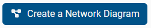

Network Diagram
Depending on the selected assessment type, users can select Network Diagram within the Prepare menu to display the Network Diagram page. Creating a network diagram allows CSET to include component-specific questions in the assessment.
Create a Network Diagram
|